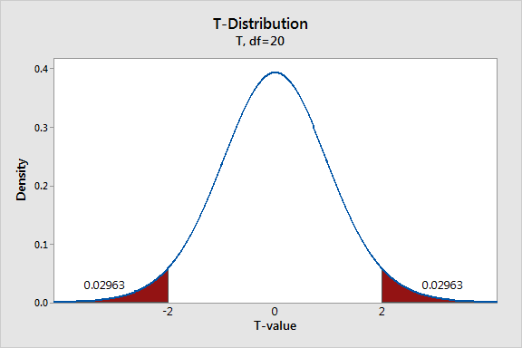
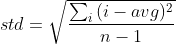
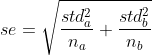
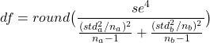
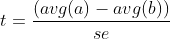
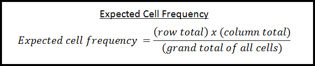
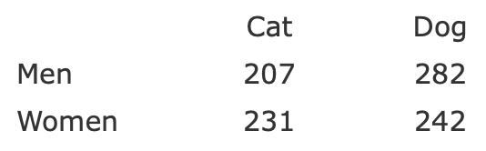
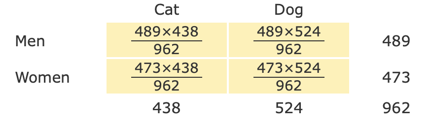

AB Testing Walkthough Guide
In this guide, we will create a python script that runs the two statistical tests commonly used in AB Testing - t-test for difference of means and chi-squared test for homogeneity - to compare the metrics of the different interfaces. The goal is that once you have gotten your AB Testing data, you will be able to directly run it through the script and interpret the result.
Setting Up Python
We will run through how to setup python and run some basic programs using variables and mathematical operations. If you are familiar with python, you may skip some of the sections below. If not, this section will greatly benefit you.
Downloading Python
First we must install python3 (if you have not in the past),
You can download it on python's website.
After installation, you can check if it works by typing in the command into the command line (terminal on mac):
> python3
This will open a live python shell. To exit the shell, type the foloowing command and click return.
> exit()
NOTE: If python3 didn't work, try:
> python
instead.
Installing and Setting Up Visual Studio Code (vscode)
We recommend Visual Studio Code (aka. vscode) (Jeff's personal rec) for coding python. Of course, you can use whatever pleases you. We assume this may already be on your computer, if it is, you still need to ensure you can code and run python in it.
You can install vscode on its website. After installation, you can open it.
Next, you must link python3 to the vscode editor. To do this, first make a new file in vscode. Press, in vscode, cmd + n (mac) or control + n (windows). It should open a new tab with your blank file. Write:
print('Hello, World')It will now ask you to install the python extentions. Install them. If it asks you to choose a python interpreter, choose Python 3.8.* The star indicates the last number doesn't matter.
Last, you must run your code. There should be a run button in the top right. Click that. A terminal will appear in the bottom with your desired output - Hello, World!
If you have any issues, please contact the TAs or refer to the startup full guide. The full setup guide is on vscodes's website.
Variables and Basic Mathematical Operations
Unlike our strictly types languages (java, c++), pyhton is dynamically typed, meaning the complier does not require the variable type when declaring it. So, to make a variable:
hello_world = 'Hello, World!'
print(hello_world)Notice how python uses the underscore for spaces in names. It is not camelCase nor hypenenated.
For this studio, you will only need the basic mathematical operations, except for the round function below. The mathematical operations are trivial:
quik_maths = (((20 / 4) * 5) - (2 ** 3)) + 3
print(quik_maths)The only operator exclusive to python here is the power operator. In many languages, the power function does not have a short hand. In python, it is **
One important math function we will need is round (to the nearest integer).
x = round(2.3432)
print(x)This will be important for the df calculation.
Creating Functions and Conditionals
I just want to familiarize yourself with the syntax of making a function using. Let's say I wanted to make a function that returns a greeting. It takes in the name of the person to be greeted. I would do it by the following.
def generate_greeting(name):
return 'hi, ' + name
print(generate_greeting('joe'))
Notice how we use def in python. Also, how the body is indented. There are no brackets, only a colon with an indentation.
The syntax is very similar to that of conditionals, specifically the if-statement. Below is the syntax for the if-statement.
num = 101
if num > 100:
print('greater than 100')
else:
print('less than or equal to 100')If num = 99, then it would've printed 'less than or equal to 100'
In python, there is no parathesis around the boolean expression. The body is also indented.
List Operations
Below is a summary of all list operations needed for this studio. This is fairly concentrated, so it it broken up into many small segments.
In terms of lists, below is all we need for this studio. For more methods not mentioned (remove, del, reverse), consult this intro guide from W3Schools.
Creating and Appending
We can create an empty list using []. To add elements to a certain list, we use the append function.
list_empty = []
list_empty.append(203)
list_empty.append('hi')
print(list_empty)Notice how it is acceptable to have different types of elements in this list. For this studio, we will use lists only containing numbers.
We can also initialize a list with multiple elements:
list_nums = [204.3, 304.2, 3, -123]
print(list_nums)To append two lists together, you can use extend.
list_nums_1 = [204.3, 304.2, 3, -123]
list_nums_2 = [-1, -304.1, -3]
list_nums = list_nums_1.extend(list_nums_2)
print(list_nums)Getting the Length of a List
To get the length of a list, we use the len method.
list_nums = [204.3, 304.2, 3, -123]
list_len = len(list_nums)
print(list_len)Accessing Elements Using Index
To access a certain element in the list using the index, there is a short hand.
list_nums = [204.3, 304.2, 3, -123]
ele_at_index_2 = list_nums[2]
print(ele_at_index_2)There are some really nice ways to access the last element of a list. We can also use negatives to access the list backwards. However, the last element is -1, not -0.
list_nums = [204.3, 304.2, 3, -123]
last_ele = list_nums[-1]
second_last_ele = list_nums[-2]
print([last_ele, second_last_ele])Updating Elements
Similar to the accessing elements, you can update the element using the same index notation.
list_nums = [204.3, 304.2, 3, -123]
list_nums[1] = list_nums[1] * -1
list_nums[2] = list_nums[2] ** 2
print(list_nums)Slicing
Slicing, or getting sublists, also has a shorthand. It uses the slice operator (:)
list[start:end:skip] with start being the index to start the sublist (inclusive),
end being the index to end it (exlusive), and the last number being how many elements to skip in your slice.
The skip is optional, and probably will not be used in this studio.
If the start or end are blank, it will include the whole list in whichever direction the number wasn't filled out.
These examples will make it more clear. Copy and paste them into your python file.
list_nums_0 = [204.3, 304.2, 3, -123]
sub_list_0 = list_nums_0[1:3]
print(sub_list_0)
list_nums = [204.3, 304.2, 3, -123, 3012, 67]
sub_list_1 = list_nums[:4]
print(sub_list_1)
list_nums = [204.3, 304.2, 3, -123, 3012, 67]
sub_list_2 = list_nums[2:]
print(sub_list_2)
list_nums = [204.3, 304.2, 3, -123, 3012, 67]
sub_list_3 = list_nums[::2]
print(sub_list_3)
list_nums = [204.3, 304.2, 3, -123, 3012, 67]
sub_list_4 = list_nums[1:5:2]
print(sub_list_4)For-each Loops
The for-each loop is the simplest, and will not allow you to use indices. The loop syntax is below:
list_nums = [204.3, 304.2, 3, -123, 3012, 67]
for n in list_nums:
print(n)
Notice how the for-loop structure is very similar to that of a function. It uses the colon with an indented body under it.
The n in the loop is each element which can be used or modified.
Let's say we wanted to write a function to calculate the sum of the elements in a list.
def list_sum(l):
l_sum = 0
for n in l:
l_sum = n + l_sum
return l_sum
list_nums = [204.3, 304.2, 3, -123, 3012, 67]
print(list_sum(list_nums))Notice how the for-loop structure is very similar to that of a functions. It uses the colon with an indented body under it.
For Loops
The for loop is the similar to the for-each loop, except it uses the range function. The advantage to this type of loop is that we can access the element by the index. The loop syntax is below:
list_nums = [204.3, 304.2, 3, -123, 3012, 67]
for n in range(0, len(list_nums)):
print(list_nums[n])
The n represents the index. The range function actually generates a list from [0, 1, ..., len(list_nums)-1] (range doen't include the last index, similar to slicing).
So, in essence, it's actually just a for-each loop with an artifical list that holds the indices.
Let's say we wanted to write a function to caclulate the sum of all the elements except the first and the last. We can restrict the range function.
def list_sum(l):
l_sum = 0
for n in range(1, len(l)-1):
l_sum = l[n] + l_sum
return l_sum
list_nums = [204.3, 304.2, 3, -123, 3012, 67]
print(list_sum(list_nums))Slicing 2D
Slicing 2D does not have a shorthand unless we import modules. Therefore, we must make our own using for loops and the 1D slice operator. Algorithmically, this isn't too bad.
Let's say we had a 4by4 2D list like so
list_2D = [[30, 4, 3, 1],
[32, 12, 35, 23],
[43, 52, -12, 34],
[34, 341, 340, -214]]
We want to slice the middle elements, so nothing on the border. The most natural way is to: 1) access the 1D lists using a for loop,
2) slice the sublist with the two middle elements, 3) append the sliced sublists together.
To abstract this, instead of the two middle elements, we can replace them with the range of indices we want. Also, instead of accessing all 1D lists, we only need to access the ones we want.
Since you love the TAs :), we will implement this 2D slice function for you using the algorithm described above. You may use it as if was a helper you implemented. However, you must follow the "contract" of the function: list_2D must be a 2D list, and the indices you are splicing are within the dimensions of the array.
def slice_2D(list_2D, start_row, end_row, start_col, end_col):
to_append = []
for l in range(start_row, end_row):
to_append.append(list_2D[l][start_col:end_col])
return to_append
print(slice_2D(list_2D, 1, 3, 1, 3))
print(slice_2D(list_2D, 0, len(list_2D), 2, 3))Notice that when you slice a 2D grid using our implemention, you recieve back a 2D grid, even your column or row indices span width 1.
Understanding Statistical Tests
This section will mostly be covered by the lecture. Therefore, this section will just be a quick overview.
T distribution
We will be using the student T distribution (T-dist). To garner a p-value from the T-dist, we need the t-score and the degrees of freedom (df).
The image below shows how the degrees of freedom affect the t-distribution.
 Notice how as the df increases, the distribution becomes normal.
Notice how as the df increases, the distribution becomes normal.
The next image simulates the definition of a p-value.

The one of the red shaded areas represent the area that your t-score encases on the t-distribution (this shows the areas are the same for the t-score even if the sign changes).
Therefore, the further away your t-score is from zero, the lower the p-value.
Calculating this area is a complicated integral. Unfortunately :(, we cannot implement this using basic mathematics. Therefore, we must import a python module that can.
To calculate our p-value for our t-test knowing our df and t-score using python,
we will import a python module called "scipy".
To import this, open a new cmd/terminal and run this command.
> pip3 install scipy
Pip3 was "ghost" installed when you installed python3. If pip3 doesn't work,
try the same command but using pip.
At the top of your python script add these lines of code.
from scipy import stats
from scipy.stats import t as t_distAs an example (-2 is the t-score and 20 is df),
print(t_dist.cdf(-2, 20))
Note: it is important for this function that your t-score is negative. The positive t-score will give you .97036 = 1-.02963
There are many ways to avoid a positive t-score. We recommend to check for it before calling t_dist.cdf and change it before use if it is negative.
Chi^2 distribution
While the t-test is aimed at large sets of 2 samples to be compared, the Chi^2 test is suited for comparing how categories are different. Therefore, it is a completely different distribution.
 Is it skewed right but gets more even as df increases.
As before, we need df to calculate the p-value from this distribution. However, instead of a t-score, this test uses a chi^2 value.
Is it skewed right but gets more even as df increases.
As before, we need df to calculate the p-value from this distribution. However, instead of a t-score, this test uses a chi^2 value.
This time, the chi^2 value is stritcly positive (it's a squared value), and the p-value area corresponds to the red shaded reagion in the image below.

Scipy also has the function to find the p-value if we know the chi^2 value and the df. Add this import under the other imports.
from scipy.stats import chi2print(chi2.cdf(23.6, 12))print(1-chi2.cdf(23.6, 12))Interpreting P-value
With each test, your script will calculate a p-value. We will compare this p-value against our significance level (which is .05). The comparison will then tell us what to do with our set of hypotheses for each metric.
If your p-value < singificance level (.05) , then you can reject the null. Therefore, your results are statistically significant, meaning that there is a high chance the alternative hypothesis will repeat itself in other trials or situations.
If your p-value > singificance level (.05) , then you fail to reject the null. Therefore, your results are statistically insignificant, meaning that there is a doubt as to whether the alternative hypothesis will repeat itself in other trials or situations.
Yes, stats is wordy, but it is important that we see you interpreting the results in your submission of the assignment. To someone who doesn't study stats, the numbers mean nothing. So when making your conculsions with your p-value, you must contextualize the cookie cutter responses above with your metric you were testing so that anyone could understans your results.
Performing the T-tests
Below will explain the mathematics to perform a two sample t-test for the difference of means. Your task is to take the math and turn it into code so that, for any dataset given as lists, you can easily get a p-value. However, it is still your job to intepret the p-value. The number alone is not enough.
Mean and STD
To begin t-test, we need the average and standard deviation of both samples.
The mathematics for the average is trivial.
For standard deviation:

where i is an element in the list, avg is the average of all elements in the list,
and n is the number of elements in the list.
Make 2 helper functions, (that calculate average and standard deviation respectively), and implement them:
def get_avg(l)
def get_std(l)Combined STD
Next, we need to calculate the combined standard deviation.

where std_a is the standadrd deviation of a, std_b is the standadrd deviation of b,
n_a is the number of elements in a, and n_b is the number of elements in b.
Once again, create a helper function
def get_se(a, b)df Calculation for Two Samples
Then, we need the combined degrees of freedom between our two samples.

where se is the combined standard devaition, std_a is the standadrd deviation of a, std_b is the standadrd deviation of b,
n_a is the number of elements in a, n_b is the number of elements in b,
and round(x) rounds x to the nearest integer.
Once again, create a helper function
def get_2_sample_df(a, b)T-score and P-value
Now we can calculate our t-score.

where se is the combined standard error, avg(l) is the average of the values in the list.
Once again, create a helper function
def t_score(a, b)Lastly, implement a function that takes in two lists holding the data for sample A and sample B and produces the p-value. We expect you to call the helper functions and use the t-dist.cdf method imported above. The name of this function must be the same for autograding purposes.
def perform_2_sample_t_test(a, b)Performing the Chi^2 Test
The following will give the equations to perform a chi^2 test for homogeneity. You job is that when given a 2D grid array of categories, your code will implement the mathematics correctly a give the desired p-value.
Expected Values
Calculating expected values depends wholly on the counts in the grid.
The formula is simple but needs some context.

Row total will be the sum of all the numbers in the same row of the element.
Column total will be the sum of all the numbers in the same column of the element.
Grand total is the sum of all the elements in the grid.
The following images (source) shows the formula in practice.

Above is the grid of counts.
Below is the formula applied.

In our case, instead of men and women, we will have A and B. Also, instead of cat and dog, our metric will be there.
Keep in mind that the grid isn't always square. We can have multiple categories for both A and B.
Implement a helper function that consumes the grid of observed counts and returns a new grid holding the expected counts. Do not modify the parameter, count_grid.
def get_expected_grid(observed_grid)We recommend you implement the following helper functions to keep it clean (this part is optional however).
def row_sum(observed_grid, ele_row)
def col_sum(observed_grid, ele_col)
def total_sum(observed_grid)
def calculate_expected(row_sum, col_sum, tot_sum)df for Chi^2
Df is very simple to calculate for a chi^2 test of homogeneity.
df = (rows − 1) × (columns − 1)
Therefore, for a 2by2, df = (1)(1) = 1
For a 2by4, df = (1)(3) = 3
Implement a helper function that takes the grid of observed counts and returns the df for the chi^2 test.
def df_chi2(observed_grid)Chi^2 and P-value
Now we can calculate our chi^2 value. The formula is below.
The fancy X^2 stands for Chi^2.
You must apply the formula to each element in the grid. Luckily we now have two corresponding grids,
one with the observed counts and the other (created by the helper function above), with the expected counts.
Once again, create a helper function that consumes the grid of observed counts and calculates the chi^2 value.
def chi2_value(observed_grid)Lastly, implement a function that takes in the grid of observed counts and produces a p-value following the methods of the chi^2 test for homogeneity. Call your helpers and use the chi2.cdf function imported above. The name of this function must be the same for autograding purposes.
def perform_chi2_homogeneity_test(observed_grid)